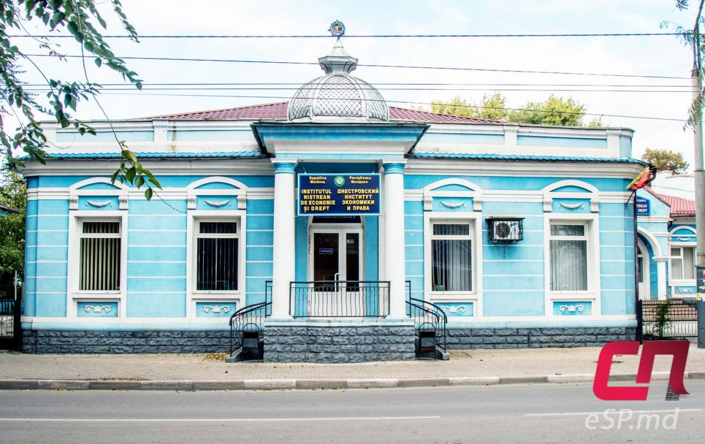
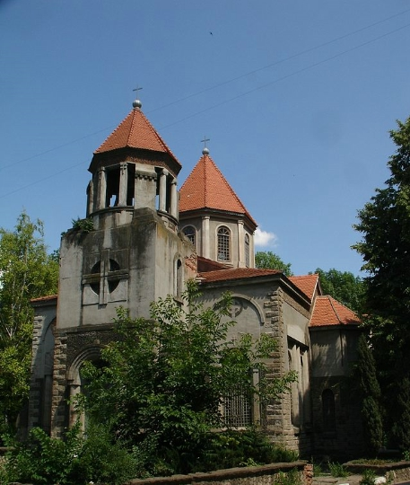
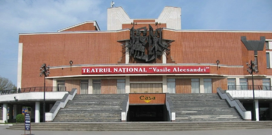

Интерестные места
Здание Днестровского института
Сейчас в нём находится Днестровский институт экономики и права, который выкупил строение. В советское время здесь долгое время располагалась детская поликлиника, некоторый период в здании находилась Еврейская община. Особняк отличается колоннами у входа, декоративными украшениями вокруг окон, башенкой над козырьком. Дом практически сохранил свой первоначальный внешний облик.
Здание загса

Точная дата постройки особняка неизвестна. Первое время строение было одноэтажным. После смерти главы семейства наследники выставили его на продажу. В 1914 году его выкупили для нужд Бельцкого земства, в 20–30 гг. в нём стала размещаться префектура Бельцкого уезда. Для этих целей был достроен второй этаж, установлены шесть колонн, поддерживающих балкон, и др. Проект изменений подготовила архитектор Этте-Роза Спирер. В послевоенные годы в этом здании размещался Дворец пионеров. Сейчас здесь расположен Дворец бракосочетаний.
Армянская церковь Св. Григория
Армянская церковь Святого Григория Просветителя является одной из самых ярких и выразительных архитектурных достопримечательностей города Бельцы (Бэлць). Строительство храма велось с 1910 по 1914 год на средства богатых представителей армянской общины города, а именно - Марии Фокшанян и братьев Лусаханович
Национальный театр им. Василе Александри
Национальный театр им. Василе Александри, расположенный в городе Бельцы (Бэльц), является культурным и просветительским центром города. Начало истории создания театра относится к 1957 году, когда на базе действующего русского драматического театра была создана труппа из 25 молодых молдавских актеров.